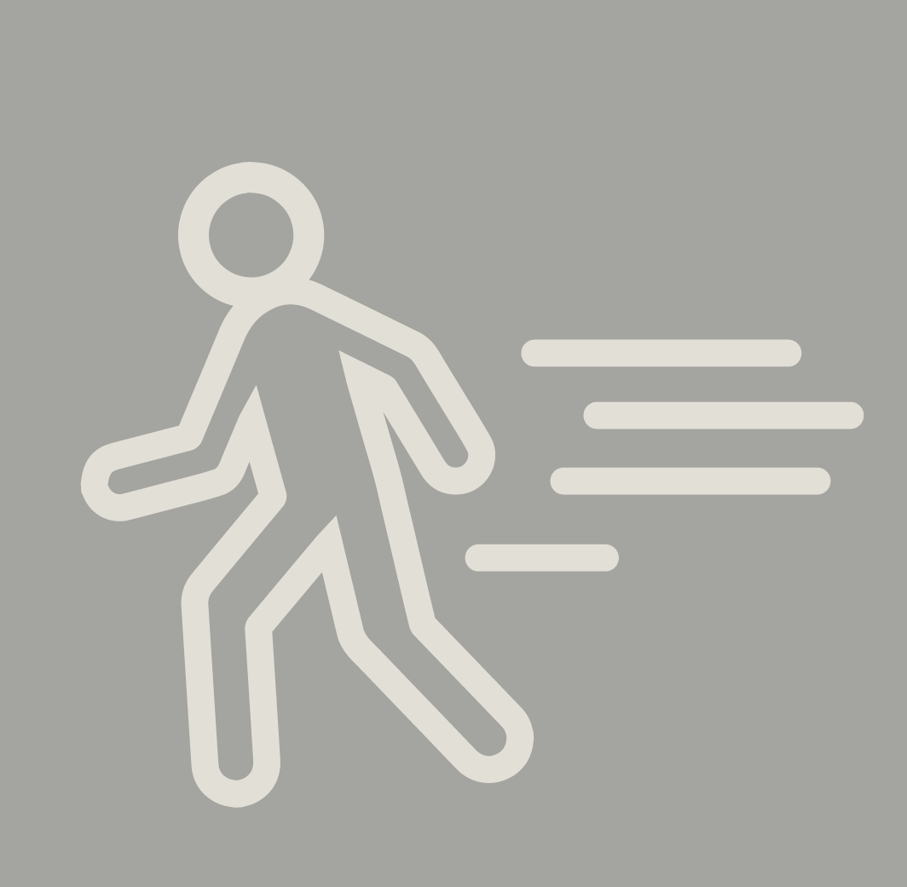

Is time on my side?
Jan 22 2016
1:00 PM

- Walking out of Temple Coffee for CM Team lunch
- Location: Temple Coffee
- People: None
- Conversation:none
1:15 PM
- Eating lunch with the Creative Media Programming Team + Nima
- Location: Zen Toro
- People: Nima, Cameron, Will, Charlie, Alex, Josh
- Conversation: Jeb Bush site hacking
1:30 PM
- Waiting for food to arrive
- Location: Zen Toro
- People: Nima, Cameron, Will, Charlie, Alex, Josh
- Conversation: Skydiving and Parachuting
1:45 PM
- Finishing last dregs of Chicken Udon Soup.
- Location: Zen Toro
- People: Nima, Cameron, Will, Charlie, Alex, Josh
- Conversation: Freeways near our hometowns in LA
2:00 PM
- Waiting for the group to finish. Please hurry up.
- Location: Zen Toro
- People: Nima, Cameron, Will, Charlie, Alex, Josh
- Conversation: "Lillian why do you keep scribbling in your notebook?"
2:15 PM
- Trying to print out research for 157 final project. Printer is broken.
- Location: Cruess Printing Lab
- People: None
- Conversation: None
2:30 PM
- Trying to get the printer to work in Cruess 207. It is also broken.
- Location: Cruess Hall
- People: None
- Conversation: *internal screaming*
2:45 PM
- Printing at Wellman Print Lab. It is not broken, thank god.
- Location: Cruess Hall
- People: None
- Conversation: None
3:00 PM
- Sending off an email to Glenda
- Location: Cruess Sewing lab
- People: Nima and Jason
- Conversation: Talking about Nicholas Felton and making a birthday cake for Armin’s birthday
3:15 PM
- Typing up these events in an Evernote document
- Location: Cruess Sewing lab
- People: Nima
- Conversation: None
3:30 PM
- Realize that I've lost my keys
- Location: MU Parking Structure
- People: Nima
- Conversation: Frantically calling Zen Toro, Temple Coffee, Jason Lin
3:45 PM
- On the search for keys: Sitting on a bus
- Location: MU roundabout
- People: Nima
- Conversation: Will losing the keys will be an anomaly in this project? Unfortunately, no.
4:00 PM
- On the search for keys: About to get off the bus
- Location: D street and First street intersection
- People: Nima
- Conversation: None
4:15 PM
- On the search for keys: Speedwalking back to Temple Coffee
- Location: Next to Woodstock's Pizza
- People: None
- Conversation: None
4:30 PM
- Out of breath at work. Pleasantries with Rohit and Arthur
- Location: CM Office
- People: Rohit, Arthur, Jessica
- Conversation: Talking a little about user testing with their new app, HitUp.
4:45 PM
- Reading for Independent Study
- Location: CM Office
- People: None
- Conversation: None
5:00 PM
- Reading for Independent Study
- Location: CM Office
- People: None
- Conversation: None
5:15 PM
- Reading for Independent Study
- Location: CM Office
- People: None
- Conversation: None
5:30 PM
- Reading for Independent Study
- Location: CM Office
- People: None
- Conversation: None
5:45 PM
- Reading for Independent Study
- Location: CM Office
- People: None
- Conversation: None
6:00 PM
- Reading for Independent Study
- Location: CM Office
- People: None
- Conversation: None